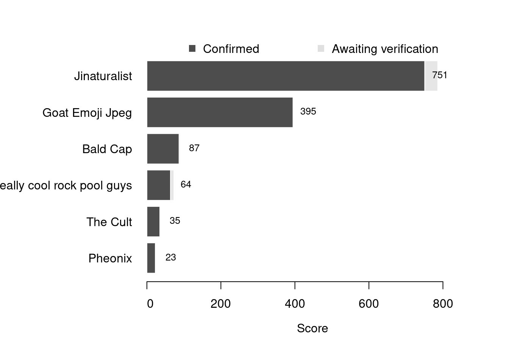

Content
You can view all the wildlife recorded at this event on iNaturalist.


| Records | 147 |
| Species | 88 |
| Verified species | 67 |
| Observers | 10 |
| Potential score | 2,540 |
| Confirmed score | 1,388 |
| Top verified species | Catriona aurantia |
| Top species rarity score | 200 |
| Registered participants | 28 |
| Children attending | 1 |
Congratulations to Jinaturalist for taking the gold medal in this BioBlitz Battle! And well done to everyone for a great game and some fantastic wildlife finds.
| Team | Records | Potential Score | Confirmed Score |
|---|---|---|---|
| Jinaturalist | 79 | 786 | 751 |
| Goat Emoji Jpeg | 6 | 395 | 395 |
| Bald Cap | 14 | 90 | 87 |
| Super really cool rock pool guys | 9 | 73 | 64 |
| The Cult | 5 | 36 | 35 |
| Pheonix | 2 | 23 | 23 |

| Participant | Records | Potential Score | Confirmed Score |
|---|---|---|---|
| Isaac Mawer | 33 | 473 | 458 |
| unorthodox_sketch | 6 | 395 | 395 |
| Will | 36 | 396 | 366 |
| Harrison Usher | 10 | 166 | 101 |
| evefraj | 9 | 73 | 64 |
| tbs26txp | 11 | 61 | 61 |
| nina_03 | 5 | 36 | 35 |
| Pheonix_M | 2 | 23 | 23 |
| Jay | 1 | 16 | 16 |
| millie_cath | 2 | 13 | 13 |
A total of 5 species have a verified rarity score of 55 or higher.


Community verified records only
Click any image to view the taxon on iNaturalist.
| Name | Rarity Score | |
|---|---|---|

|
Catriona aurantia | 200 |

|
Bluff oyster - Ostrea chilensis | 88 |

|
Black Limapontia - Limapontia capitata | 75 |

|
Alder’s Seaslug - Alderia modesta | 72 |

|
Cryptopleura ramosa | 55 |

|
Elachista fucicola | 53 |

|
Haliclona cinerea | 42 |

|
Hooded Shrimp - Athanas nitescens | 33 |

|
Goosebump Sponge - Dysidea fragilis | 32 |

|
ladder ascidian - Botrylloides leachii | 28 |

|
Keyhole Bryozoan - Cryptosula pallasiana | 28 |

|
Marsenia perspicua | 28 |

|
Painted Goby - Pomatoschistus pictus | 25 |

|
Harmothoe | 24 |

|
Aeolidia filomenae | 20 |

|
Anurida | 20 |

|
Northern cowrie - Trivia arctica | 20 |

|
Rock Goby - Gobius paganellus | 19 |

|
Dead Man’s Fingers - Alcyonium | 18 |

|
Side-gilled Seaslug - Berthella plumula | 17 |

|
Five-bearded Rockling - Ciliata mustela | 16 |

|
Rock Gunnel - Pholis gunnellus | 16 |

|
Long-clawed Porcelain Crab - Pisidia longicornis | 16 |

|
Blow Lugworm - Arenicola marina | 15 |

|
Sycamore Aphid - Drepanosiphum platanoidis | 15 |

|
Bread-crumb Sponge - Halichondria panicea | 15 |

|
Common Prawn - Palaemon serratus | 15 |

|
Beaked Barnacle - Austrominius modestus | 14 |

|
Sand Mason Worm - Lanice conchilega | 14 |

|
Great Scallop - Pecten maximus | 14 |

|
Spiral Tube Worms - Spirorbinae | 14 |

|
Star Tunicate - Botryllus schlosseri | 12 |

|
crumb-of-bread sponge - Hymeniacidon | 12 |

|
Flat Periwinkle - Littorina obtusata | 12 |

|
Christmas Tree Worms - Spirobranchus | 12 |

|
Pacific Oyster - Magallana gigas | 11 |

|
Common Brittle Star - Ophiothrix fragilis | 11 |

|
Mites and Ticks - Acari | 10 |

|
Grey Mail-shell - Lepidochitona cinerea | 10 |

|
Spiny Spider Crab - Maja brachydactyla | 10 |

|
Channelled Wrack - Pelvetia canaliculata | 10 |

|
Lined Top Shell - Phorcus lineatus | 10 |

|
Hairy Porcelain Crab - Porcellana platycheles | 10 |

|
Broadleaf Sea Lettuce - Ulva lactuca | 10 |

|
Amphipods - Amphipoda | 9 |

|
Common Sea Star - Asterias rubens | 9 |

|
Cushion Star - Asterina gibbosa | 9 |

|
Common Cockle - Cerastoderma edule | 9 |

|
Blue Mussel - Mytilus edulis | 9 |

|
Common Hermit Crab - Pagurus bernhardus | 9 |

|
conifers - Pinales | 9 |

|
Purple Topshell - Steromphala umbilicalis | 9 |

|
Gutweed - Ulva intestinalis | 9 |

|
Great Egret - Ardea alba | 8 |

|
Knotted Wrack - Ascophyllum nodosum | 8 |

|
Edible Crab - Cancer pagurus | 8 |

|
Saw Wrack - Fucus serratus | 8 |

|
bladder wrack - Fucus vesiculosus | 8 |

|
European Shag - Gulosus aristotelis | 8 |

|
Grey Seal - Halichoerus grypus | 8 |

|
Shanny - Lipophrys pholis | 8 |

|
Common Periwinkle - Littorina littorea | 8 |

|
Atlantic Dogwhelk - Nucella lapillus | 8 |

|
Common European Limpet - Patella vulgata | 8 |

|
Grey Heron - Ardea cinerea | 7 |

|
European Green Crab - Carcinus maenas | 7 |

|
Enthemonae | 4 |